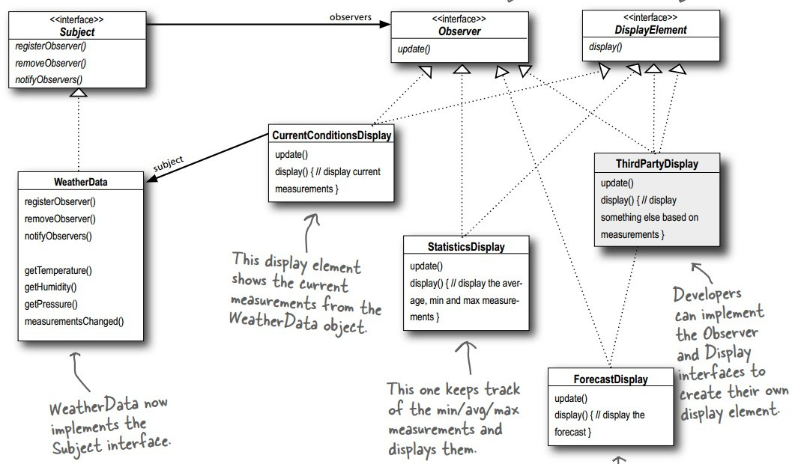

浅谈设计模式二: 观察者模式(Observer)
Table of Contents
实例
有一个气候观测应用，包括三部分：
- 气候站(WeatherStation):物理设备用来采集实际天气数据;
- 气候数据对象(WeatherData)追踪来自气候站的数据和更新显示;
- 给用户现在气候情况的显示(xxDisplay)
现在气候收集这3个数据：温度，湿度和气压。有3种不同的显示：现在的天气情况，天气统计信息和天气预测信息。
直观的话是在 WeatherData 类里的 measurementsChanged() 里直接调用不同显示器的 update() 来更新数据，如下：
WeatherData::measurementsChanged() { currentConditionsDisplay.update(temp_, humidity_, pressure_); statisticsDisplay.update(temp_, humidity_, pressure_); forecastDisplay.update(temp_, humdity_, pressure_);
1. WeatherData和Display比较紧的耦合。在函数内直接使用实例，每次增加或较少Display都要在这个函数内修改。
2. 以具体实例来编码，使得不能动态的添加和减少显示元素，唯有修改这段代码
观察者模式(Observer)
目的
在对象间，定义一对多的依赖关系，那么当这一个对象改变状态时，所有它的依赖对象得到自动通知和更新。

实现
这里一对多的依赖关系，我们把这单一的对象称为目标对象(Subject)，而所有依赖于它的称为观察者对象(Observer)。分别定义Subject和Observer的对象。 代码实例在这里。
- 目标对象(Subject)接口
- 先建立好目标对象;
- 然后观察者对象可以动态调用
registerObserver来加入目标对象的更新列表内，调用registerObserver来从目标对象更新列表中移出; - 目标对象通过
notifyObservers通知和更新观察者列表
class Subject { public: virtual void registerObserver(Observer *o) = 0; virtual void removeObserver(Observer *o) = 0; virtual void notifyObservers() = 0; };
- 观察者对象(Observer)接口
观察者对象(Observer)接口只需要一个更新功能，使得目标对象通过
notifyObservers分别调用观察者的update函数来更新参数。class Observer { public: virtual void update(float temp, float humdity, float pressure) = 0; };
- 整合起来
WeatherData *weather_data = new WeatherData(); CurrentConditionsDisplay *current_display = new CurrentConditionsDisplay(weather_data); StatisticsDisplay *statistics_display = new StatisticsDisplay(weather_data); ForecastDisplay *forecast_display = new ForecastDisplay(weather_data); weather_data->setMeasurements(80, 65, 30.4f); weather_data->setMeasurements(82, 70, 29.2f);
- 总的框架

总结
观察者模式(Observer)结构

组成
- 目标（Subject）
- 知道它的观察者。任意多的观察者对象可以观察一个目标对象。
- 提供一个附加和分离观察者对象的接口。
- 观察者（Observer）
- 为在目标中得到改变通知的对象定义一个更新接口。
- 具体目标（ConcreteSubject）
- 存储具体观察对象感兴趣的状态。
- 当状态改变时，发送更新给它的观察对象。
- 具体观察者（ConcreteObserver)
- 维持一个具体目标对象的引用。
- 存储要和目标保持一致的状态。
- 实现观察者更新接口来使得它的状态与目标保持一致。
应用场景
- 当一个抽象类有2个方面，一个依赖另外一个。把这些不同的方面封装成独立的对象来让你独立的改变和复用他们。
- 当改变一个对象需要改变其他的对象们，而且你不知道有多少对象需要改变
- 当一个对象需要能通知其他对象们，但不需要对这些对象们做任何假定。也就是说，你不想这些对象紧耦合。
缺点
- 不可预期的更新。因为观察对象们不知道各自的存在，他们会忽略改变目标的最终代价。一个在目标（subject）看似无害的操作可能造成观察者和依赖它们的观察者的级联式更新。而且，没有很好定义或维护的依赖准则经常导致虚假的更新，这些都很难去追踪。
简单的更新协议没有提供任何细节关于 什么 会在目标内改变的事实加重了这个问题。没有附加的协议来帮助观察者发现什么改变了，它们可能必须努力的去推测这些改变。